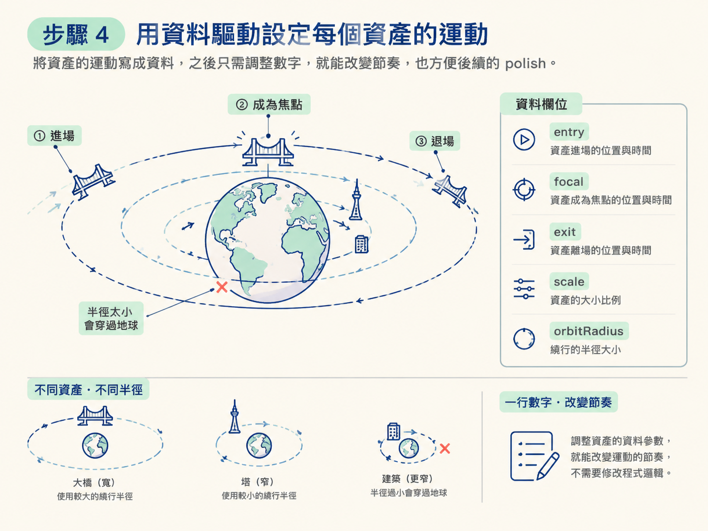

做完這一階段，你的 3D 場景裡會長出認得出來的城市地標：開羅有金字塔、巴黎有艾菲爾鐵塔、紐約有帝國大廈與自由女神。而且既有的東西一項都沒被改壞：整頁構成、球、五座城市的順序全部原封不動。
動手前你需要兩樣東西：一個已經能跑的 build（上一節那則 prompt 的產物），以及可用的影像生成能力。其餘的，就只是一則寫得夠精準的 prompt。
第一階段的 3D 骨架跑起來之後，你會發現畫面有點「素」。球很好看，程序生成的幾何也對，但東京沒有東京的樣子，巴黎沒有巴黎的樣子。這一階段的任務，就是把生成的點陣資產（sprites）疊到既有的 3D 物件上，讓每個城市真的認得出來。
這裡最容易犯的錯，是讓 Codex 順手把整個體驗重新設計一遍。它可能覺得「既然要加資產，乾脆把版面也改一改」。所以這則 prompt 的第一句話通常不是「加什麼」，而是「保留什麼」。
第二階段是一則全新的、獨立的 prompt，但它緊跟著第一階段送出，延續同一個對話與同一份程式碼。它的範圍要刻意收窄：只加資產，不動結構。開頭先畫紅線：
Preserve the existing full-page composition, persistent globe, five-city sequence, solar navigation, typography, city copy, and abstract visual language.這一句把不能動的東西全部點名：整頁構成、持續存在的球、五座城市的順序、太陽導覽、字體、城市文案、抽象視覺語言。寫得越具體，模型越沒有「順手重做」的空間。
把每個階段切成獨立的一則 prompt、每次只前進一個維度，你才能看清這次迭代到底改變了什麼。這就是「針對性序列」的價值。
接著說清楚每個城市應該出現哪些辨識度高的地標。不要只說「加一些城市地標」，要指名到具體建築與質地，否則模型很容易生出通用的抽象幾何。例如：
- Cairo’s pyramids and Sphinx should feel like weathered monumental stone, not abstract triangles.
- Paris should feature a credible Eiffel Tower and an elegant Pont Alexandre III positioned low in the composition.
- New York must clearly include the Empire State Building, Brooklyn Bridge, and Statue of Liberty.
- Ushuaia must unmistakably feel like deep winter, with the lighthouse, train, snow, glacial forms, and aurora.注意每條都帶了一個「否定尾」：金字塔要是風化的巨石、不是抽象三角形；巴黎要有一座可信的艾菲爾鐵塔。這種寫法在告訴模型「不要退化成什麼」，比單純列清單有效得多。
資產是「圖」，圖就有格式與瑕疵問題。把產製規則寫死，等於先替你把關一輪：
- Remove chroma fringes, matte halos, rectangular backgrounds, compression artifacts, and accidental shadows baked into transparent pixels.
- Regenerate an asset if its silhouette or proportions cannot be corrected through placement alone.這兩條講的是同一件事的兩面。一方面，要清掉色邊、霧狀光暈、殘留的矩形底、壓縮雜訊，以及被烘進透明像素裡的假陰影。另一方面，若某個資產的輪廓或比例本身就錯了，光靠擺位置救不回來，那就重新生成。
這比「生好看一點」精準得多，也讓你之後判斷成品有沒有達標時有依據。
資產不是貼上去就好，它們得繞著地球動。做法是用一份資料設定來描述每個資產的運動軌跡，而不是把動畫邏輯硬寫進元件裡。
每個資產至少有幾個可調的欄位：從哪裡進場、在哪裡成為視覺焦點、從哪裡退場，以及縮放與繞行半徑。特別要注意「清除球體邊緣」：大橋這種寬的資產需要更寬的繞行半徑，窄的塔則可以貼近一點。否則資產會直接穿過地球。
// 資產運動設定的形狀（示意）
{
id: "eiffel-tower",
entry: 0.10, // 繞行進度：從球後方開始
focal: 0.45, // 繞行進度：成為視覺焦點
exit: 0.80, // 繞行進度：退到另一側
scale: 1.0,
orbitRadius: 1.35 // 依資產寬度調整，確保不穿過地球
}這種「把運動寫成資料」的做法，讓你之後想調某個資產的節奏時，只改一行數字，而不是去挖動畫程式的內部邏輯。它也讓第三階段的 polish 可以直接對著資料調參數。

送出之後，你應該看到各個城市真的長出可辨識的地標。但先別高興太早，動畫大概還是怪的。
講者跑第一版時，sprites 會在球的正中央淡出，資產明明應該在球前面，卻在半途中間消失，看起來完全不像繞著地球轉。這正是第二階段的正常產物：資產對了一半，運動還差很多。
還有一個要盯的點是「城市歸屬」：任一時間只能渲染當前城市的資產。開羅的東西不該在巴黎還看得見，巴黎的資產也不該在紐約區段開始前就冒出來。這條之後會由第三階段的 goal 明確寫成驗收條件。
第二階段的原則是「加東西，不重做」：開一則只加資產的針對性 prompt，先點名要保留的既有結構；指名每個城市要的具體地標並附上否定尾；寫死資產的格式與瑕疵規則；用資料驅動設定每個資產的進場、焦點、退場、縮放與繞行半徑。做完會得到「資產對了、動畫還很粗糙」的版本，這正是第三階段的起點。
既然動畫一次抓不準，就別再靠一則一則 prompt 手動修了。下一節要介紹 goal：一種讓 Codex 盯著成果、自己反覆迭代到驗收條件成立為止的機制。